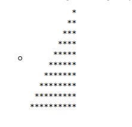

CICLOS Ejercicio # 2 2. Realizar la siguiente figura por medio del ciclo Mientras - Hace  Código Pseint Proceso Punto2 Definir i Como Entero; Definir a Como Entero; Definir veces Como Entero; i<-1; veces <- 10; Mientras i <= veces Hacer a <- 1; Mientras a <= veces Hacer Si a > (veces - i) Entonces Escribir Sin Saltar '*'; SiNo Escribir Sin Saltar ' '; FinSi Si a = veces Entonces Escribir ''; FinSi a <- a + 1; FinMientras i <- i + 1; FinMientras FinProceso Volver a Principal